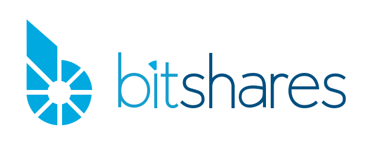

Given that many businesses and community members operate their own API endpoints, duplicating that list here would be unecessary efforts. Hence, we here link to the list of nodes as used in the reference wallet on wallet.bitshares.org.
There are some extended APIs provided by the community.
Kibana and ElasticSearch endpoints can be used to query blockchain data and perform visualizations.
Warning: Since these are hosted wallets, they may have access to your private account credentials and thus, your funds may be at risk. Please do your own research before using them.
https``://citadel.li outdated